Студентка направления «Коллаж и печать»
МАЙЯ
Коллаж · Печать · Гравюра · 3D
Собираю лист из газетных вырезок, гравюр и печатного шума. Считаю свет для объектов, которые должны выглядеть настоящими, хотя существуют только на экране.
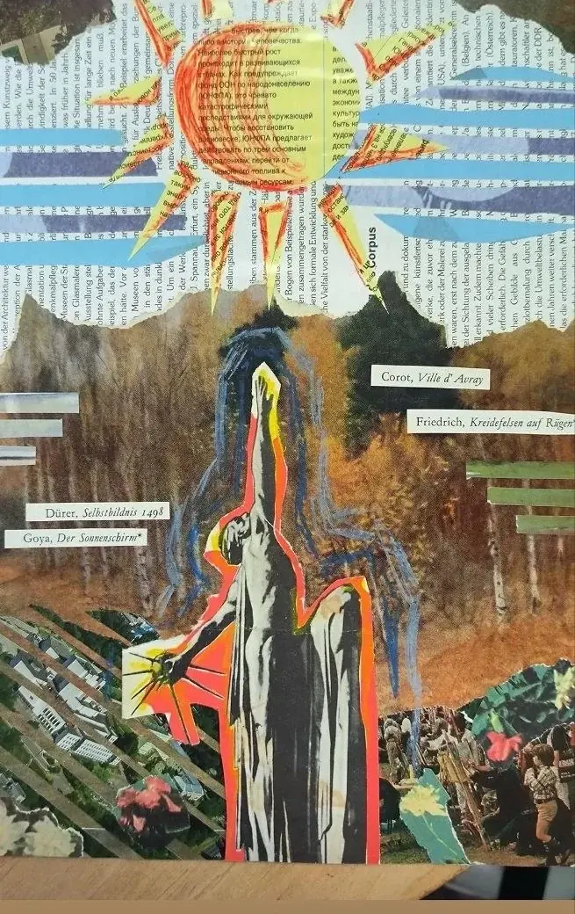
Бумага
Курсовая работа и её фрагменты. Смешанная техника: вырезки из печатных изданий, гравюрные заимствования, ножницы и маркер.
Курсовая работа
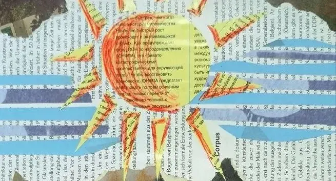
Солнце
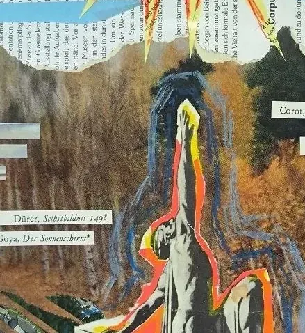
Фигура
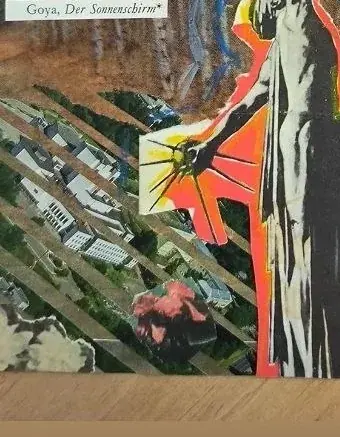
Архитектура
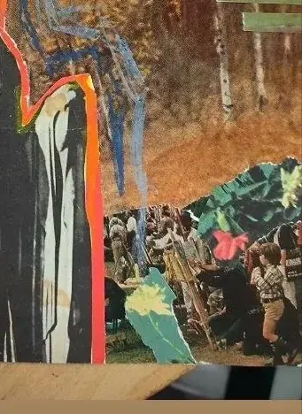
Пейзаж
Свет
3D-объекты: стекло, сатин и то, что светится изнутри. Один источник света, один материал за раз.
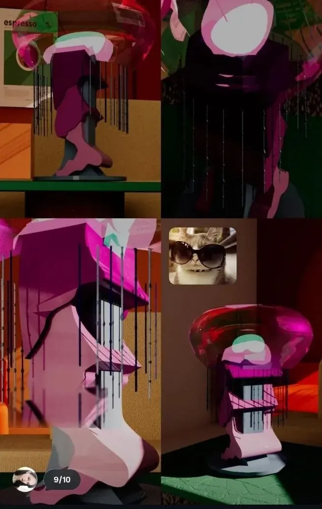
Стекло и капли
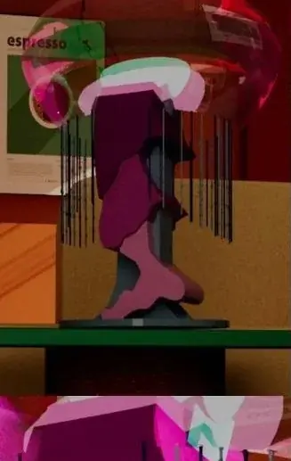
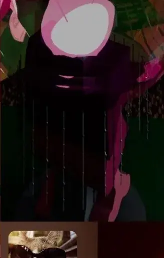
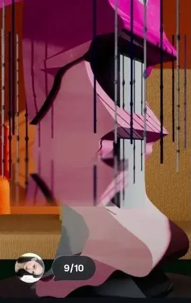
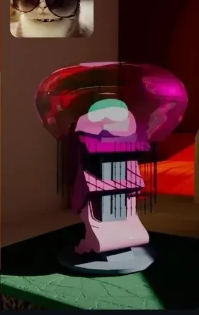
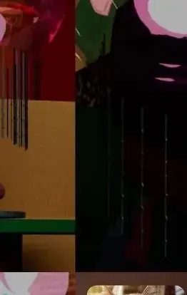
Каустики
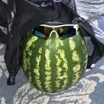
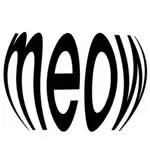
Приёмы
Шесть решений, которые повторяются в каждой работе и из-за которых коллаж держится.
-
01
Один источник света
Блик, тень и кайма всегда с одной точки. Как только свет раздваивается, форма рассыпается — даже если каждая часть сделана хорошо.
-
02
Текст как фактура
Наборный текст на полосе — не содержание, а материал. Его читают не словами, а плотностью и ритмом колонок.
-
03
Рваный край как часть композиции
Края обрывка задают форму блока. Ровный контур превращает коллаж в наклейку, рваный — в вырезку.
-
04
Один горячий акцент
На бумаге — оранжевый, в свете — маджента. Второй акцент уже не считывается: глаз перестаёт понимать, что главное.
-
05
Пустота как участник
Между кусками должно оставаться поле. Если замостить всё, зритель перестаёт различать работы и фактуру.
-
06
Сначала бумага, потом идея
Смысл рождается между фрагментами, а не внутри каждого. Поэтому выбор сильнее, чем исполнение.
Майя
Учусь на направлении «Коллаж и печать». Собираю лист из вырезок, гравюр, наборного текста и печатного шума; отдельно считаю свет для объектов, которые должны выглядеть настоящими.
Здесь — курсовая работа и 3D-объекты. Остальное выкладываю в Instagram по мере готовности.
- НаправлениеКоллаж и печать
- ИнструментыВырезка, печатный набор, гравюра, 3D
- МатериалыБумага, маркер, стекло, сатин
- Связь@vessperiaa
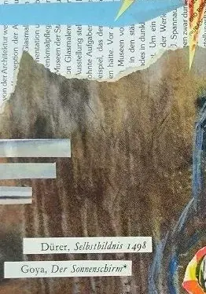
Открыта к задачам
Написать Майе
Коллаж, печать и 3D — под задачу или как самостоятельная работа.